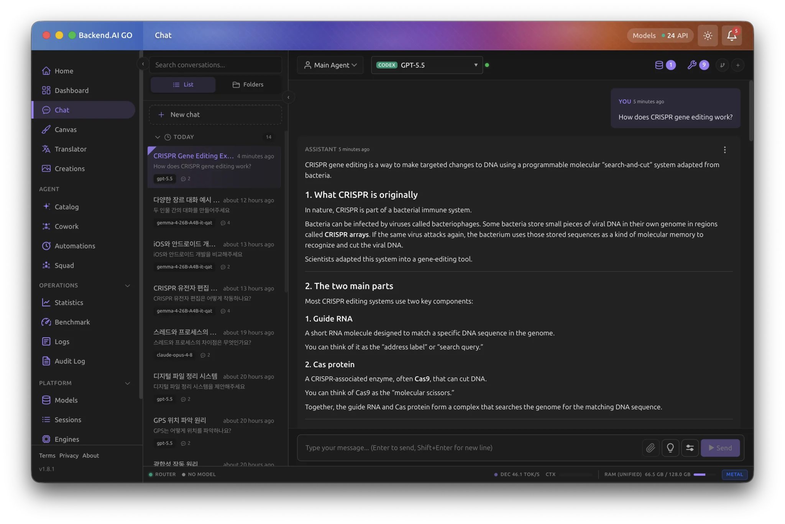
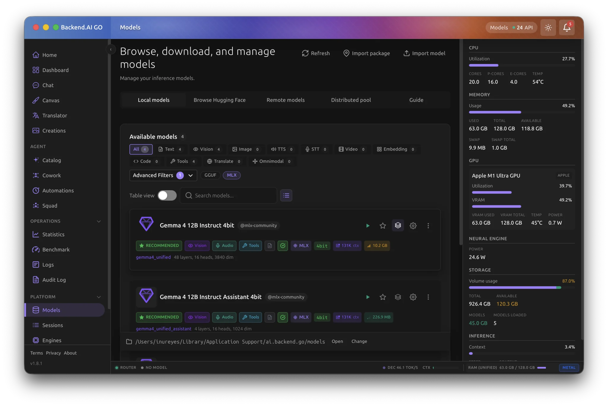
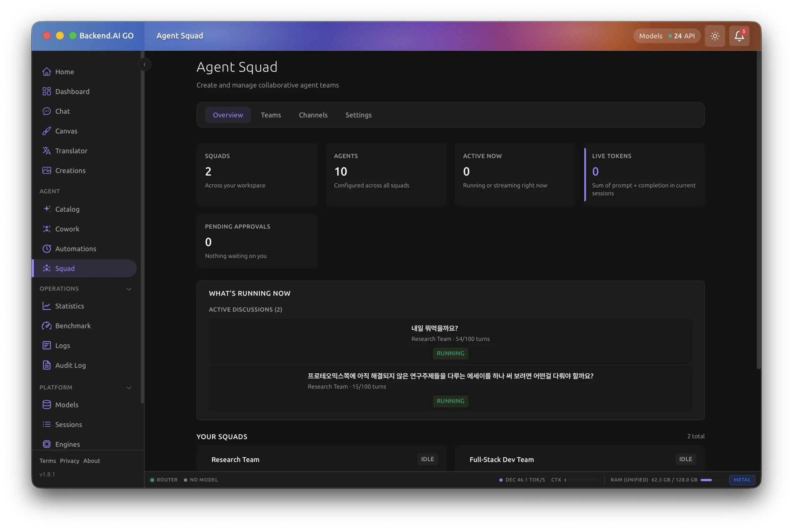
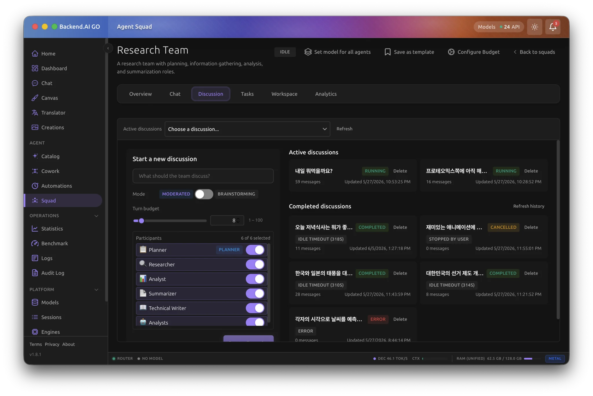
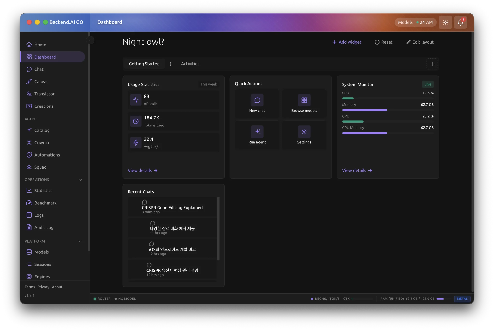
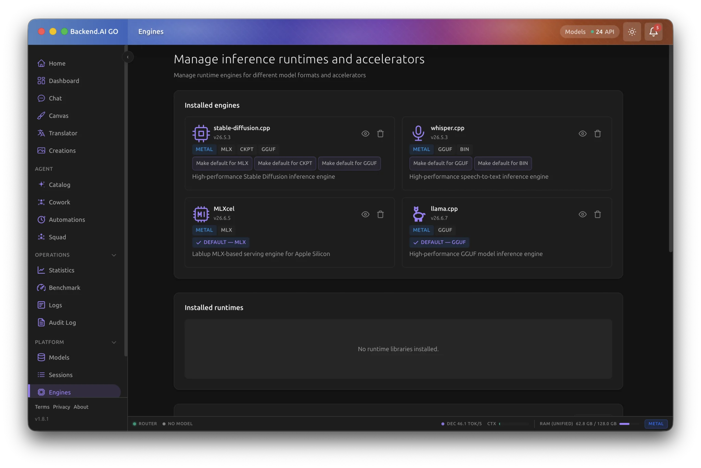

광범위한 오픈소스 모델 지원
80+ 모델 아키텍처 및 20+ VLM/OCR 지원
"성능, 간결성, 확장성,
호환성을 위해 설계되었습니다"
mlx-lm 대비 2.78 배 빠름
더 빠른 프리필 속도 (M5 Max 기준)
Extensive Open-Source Model Support
80+ Model Architectures & 20+ VLM/OCR Supported
"Designed for performance,
simplicity, scalability, and compatibility"
2.78x faster than mlx-lm
Faster prefill speed (on M5 Max)
80개 이상의 최신 아키텍처 모델 지원
Support for 80+ Latest Architecture Models
Llama, Qwen, Gemma 등 다양한 오픈소스 LLM 및 VLM과 함께 작동합니다
Works seamlessly with various open-source LLMs and VLMs like Llama, Qwen, and Gemma.
The Homebrew formula installs the latest released mlxcel and mlxcel-server binaries on macOS and Linux:
brew tap lablup/tap
brew install mlxcelmlxcel run resolves the model, downloads it on first use, reuses it afterward, and starts an interactive chat REPL. A bare model name resolves under mlx-community by default.
# Interactive chat.
mlxcel run Qwen3.5-0.8B-4bit
# One-shot generation, then exit.
mlxcel run Qwen3.5-0.8B-4bit -p "Hello, world!" -n 100
# With no model argument, use mlx-community/gemma-4-e2b-it-4bit.
mlxcel rungenerate, serve, and inspect accept the same model forms through -m: an existing local path, a HuggingFace owner/name repository id, or a bare name. MLXCEL_DEFAULT_ORG changes the bare-name organization.
Thinking-capable checkpoints may generate reasoning before the final answer. run and generate hide reasoning from terminal output by default; pass --show-reasoning to display it without the raw marker tokens.
With no -n/--max-tokens, generation continues until EOS or the effective context limit. Pass -n N to set a cap.
mlxcel generate -m Qwen3.5-0.8B-4bit -p "Hello, world!" -n 100
# Read-only memory estimate before loading.
mlxcel inspect -m Qwen3.5-0.8B-4bit --max-tokens 32768
# Emit the same estimate as machine-readable bytes for recipe builders or schedulers.
mlxcel inspect --json -m Qwen3.5-0.8B-4bit --max-tokens 32768 | python3 -m json.tool
# Abort before generation if the estimated model and KV cache do not fit.
mlxcel generate -m Qwen3.5-0.8B-4bit -p "Hello" -n 32768 --estimate-memorymlxcel inspect --json prints a single JSON object with byte-exact weights_bytes, kv_bytes_total, activation_bytes, headroom_bytes, budget_bytes, total_bytes, fits, input flags, and per-token FP16/INT8 KV rates when the model config exposes KV geometry. TurboQuant per-token sizing is reported as null until the estimator models those widths directly.
mlxcel-server and mlxcel serve start the same server. Their server flag surfaces are kept aligned; mlxcel serve additionally has the one-shot preflight flags --estimate-memory and --force.
mlxcel-server -m Qwen3.5-0.8B-4bit --port 8080
curl http://localhost:8080/v1/chat/completions \
-H 'Content-Type: application/json' \
-d '{"model":"Qwen3.5-0.8B-4bit","messages":[{"role":"user","content":"Hello"}]}'Common deployment controls work on both server entry points:
# API keys from a list or file; both sources are combined.
mlxcel-server -m Qwen3.5-0.8B-4bit --api-key alice-key,bob-key
mlxcel-server -m Qwen3.5-0.8B-4bit --api-key-file /etc/mlxcel/api-keys
# Restrict browser CORS, or serve HTTPS.
mlxcel-server -m Qwen3.5-0.8B-4bit \
--allowed-origins https://app.example.com,https://admin.example.com
mlxcel-server -m Qwen3.5-0.8B-4bit \
--ssl-cert-file cert.pem --ssl-key-file key.pem
# Serve below a path prefix or on a Unix domain socket.
mlxcel-server -m Qwen3.5-0.8B-4bit --api-prefix /llama
mlxcel-server -m Qwen3.5-0.8B-4bit --host /run/mlxcel.sockDownloaded models normally live at ${MLXCEL_CACHE_DIR:-$HOME/.cache/mlxcel}/models/<owner>/<name>. On generate, run, inspect, download, list, and rm, use --models-dir to override that store. On the two server entry points, the store override is --model-store-root; --models-dir now selects multi-model router discovery and cannot be combined with -m.
# Router mode: discover direct checkpoint subdirectories under /srv/models,
# use the global store as another source, and keep at most four models loaded.
mlxcel-server --models-dir /srv/models \
--model-store-root /var/lib/mlxcel/models --models-max 4Router management, live LoRA, native routes, runtime settings, context sizing, idle sleep, and compatibility migration details are in Server features.
The offline commands use the same loaders and batching paths as the HTTP endpoints.
# Embed two texts and print vectors plus cosine similarity.
mlxcel embed -m sentence-transformers/all-MiniLM-L6-v2 \
-p "The weather is lovely" -p "It is sunny"
# Rank documents against one query.
mlxcel rerank -m BAAI/bge-reranker-v2-m3 \
-q "what is panda?" -d "hi" -d "The giant panda is a bear species."
# Serve embeddings alone, or a reranker beside a chat model.
mlxcel-server -m sentence-transformers/all-MiniLM-L6-v2 --port 8080
mlxcel-server -m Qwen3.5-0.8B-4bit \
--reranker-model mlx-community/Qwen3-Reranker-0.6B-4bit --port 8080See Embeddings and reranking for multimodal inputs, supported families, pooling, request schemas, and side-model serving.
An audio-capable chat checkpoint serves transcription. Phi-4 Multimodal and Gemma 3n accept WAV, MP3, and FLAC detected from their bytes; other current audio families accept WAV. A dedicated Whisper checkpoint also provides a WAV-only transcription server.
mlxcel-server -m models/whisper-base --port 8080
curl http://localhost:8080/v1/audio/transcriptions \
-F file=@recording.wav -F model=whisper-baseKokoro-82M checkpoints serve POST /v1/audio/speech. See Audio API for model layout, request formats, limits, streaming, and current backend constraints.
mlxcel list # name, size, and modified time
mlxcel list --sort size # largest first
mlxcel list --json # stable machine-readable array
mlxcel list -q # repository ids only
mlxcel list -v # include absolute paths
mlxcel rm mlx-community/Qwen3.5-0.8B-4bit
mlxcel rm mlx-community/Qwen3.5-0.8B-4bit --yesmlxcel rm deletes only from the mlxcel-managed store. A checkpoint that exists solely in the read-only HuggingFace cache is reported but not removed.
# Object detection with an RT-DETRv2 checkpoint.
mlxcel detect -m models/rt-detr-v2 -i image.jpg --format json
# Inspect the hardware-specific kernel tuning matrix without profiling it.
mlxcel tune --dry-run
# Split the GLM-4.7-Flash MTP block out of the raw checkpoint into a 4-bit
# drafter, then pair it with a glm4_moe_lite target.
mlxcel split-mtp -m models/glm-4.7-flash-bf16 -o models/glm-4.7-flash-mtp-4bit --q-bits 4
mlxcel generate -m models/glm-4.7-flash-4bit --draft-model models/glm-4.7-flash-mtp-4bit -p "Hello"mlxcel tune can profile supported kernel tactics into the local autotune cache; set MLXCEL_AUTOTUNE=cache to consume recorded winners. Use mlxcel --help or a subcommand's --help for the complete flag surface.
Apple Silicon prerequisites are Rust, Xcode Command Line Tools, CMake, and the Metal toolchain component:
xcodebuild -downloadComponent MetalToolchain
git clone https://github.com/lablup/mlxcel.git
cd mlxcel
cargo build --release --features metal,accelerateLinux/NVIDIA builds require the CUDA toolkit and MLX's CUDA system dependencies:
cargo build --release --features cudaLinux/AMD builds are experimental and need a ROCm installation with its HIP, rocBLAS, rocWMMA, hipBLASLt, and hipRTC CMake packages:
cargo build --release --features rocmA plain Linux build has no GPU feature and runs on the CPU, which is not a validated release target and is much slower. See Installation for the complete prerequisite, CUDA and ROCm architecture, runtime-header, and packaging matrix, and Linux with AMD ROCm for the current ROCm status.
고성능과 호환성,
고급 기능 완벽 지원
High Performance & Compatibility,
Advanced Features fully supported
-
1
80+ 오픈소스 모델: Llama, Qwen, Gemma, Phi, Mistral, DeepSeek 등 지원
80+ Open-Source Models: Support for Llama, Qwen, Gemma, Phi, Mistral, DeepSeek, etc.
-
2
20+ VLM/OCR 모델: Qwen3-Omni, Llama 3.2 Vision, GLM-4V, Hunyuan-VL 지원
20+ VLM/OCR Models: Support for Qwen3-Omni, Llama 3.2 Vision, GLM-4V, Hunyuan-VL.
-
3
TurboQuant KV 캐시: KV 캐시를 3~4.25 bits/value로 압축하여 메모리 74% 절약
TurboQuant KV Cache: Compress KV cache to 3~4.25 bits/value, saving 74% of memory.
-
4
모델 서저리: YAML 기반 가중치 변환으로 재학습 없이 확장, 추가, 제거, 보간 가능
Model Surgery: YAML-based weight transformation enables expansion, addition, removal, and interpolation without retraining.
-
5
분산 추론 지원: 텐서 병렬(TP) 및 파이프라인 병렬(PP), mDNS 자동 검색 내장
Distributed Inference: Built-in support for Tensor Parallelism (TP) and Pipeline Parallelism (PP) with mDNS auto-discovery.
-
6
메모리 사전 점검: inspect 기능과 --estimate-memory를 통해 사전에 OOM 오류 방지
Memory Pre-check: Prevent OOM errors in advance using the inspect function and --estimate-memory.
-
7
크로스 플랫폼 지원: macOS(Apple Silicon) 최적화 및 Linux(CUDA) 지원
Cross-Platform Support: Optimized for macOS (Apple Silicon) and supports Linux (CUDA).
-
8
Python 클라이언트 제공: `import mlxcel`을 통해 코드 환경에서도 손쉽게 LLM 제어
Python Client Provided: Easily control LLMs in your code environment via `import mlxcel`.
Optional GUI
mlxcel-server can be used directly through HTTP clients.
Backend.AI Go is available as a companion UI for local chat,
model management, and multi-model routing.






mlxcel 주요 핵심 기능
mlxcel Core Features
자주 묻는 질문
Frequently Asked Questions
궁금한 점이 있으신가요?
Any questions?
-
mlxcel은 어떤 서비스인가요?
What exactly is mlxcel?
-
Rust 기반으로 개발되어 Python이 필요 없는 네이티브 추론 런타임 및 서버입니다. Apple Silicon 환경에서 뛰어난 속도로 모델을 실행하고 HTTP API를 제공합니다.
It is a native inference runtime and server built in Rust, meaning no Python is required. It runs models at exceptional speeds natively on Apple Silicon and provides an HTTP API.
-
기존 mlx-lm과 비교하면 성능이 어떤가요?
How does its performance compare to mlx-lm?
-
M5 Max 벤치마크 결과, 텍스트 프리필 성능이 기존 mlx-lm 대비 2.78배 더 빠르며, 메모리 사용량 최적화 및 디코딩 성능에서도 강력한 우위를 보입니다.
Based on M5 Max benchmarks, text prefill performance is 2.78x faster than mlx-lm, and it shows a strong advantage in memory optimization and decoding speed.
-
설치는 어떻게 하나요?
How do I install it?
-
macOS 사용자의 경우 Homebrew를 통해 'brew tap lablup/tap && brew install mlxcel' 명령어 한 줄로 즉시 설치하고 실행할 수 있습니다.
For macOS users, you can install and run it instantly with a single Homebrew command: 'brew tap lablup/tap && brew install mlxcel'.
-
파이썬 환경에서도 사용 가능한가요?
Can I use it in a Python environment?
-
네, 독립적인 서버 외에도 Python 클라이언트를 지원하여 스크립트 내부에서 모델을 호출하고 실시간 스트리밍 기능을 활용할 수 있습니다.
Yes, besides the standalone server, it provides a Python client so you can call models directly from your scripts and leverage real-time streaming.
빠른 시작, 단 몇 초 안에 경험하세요
Get Started, Experience it in seconds
Homebrew를 통해 쉽게 설치하고Apple Silicon에서강력한 성능을 즉시 누려보세요.
Install easily via Homebrewand instantly enjoypowerful performance on Apple Silicon.